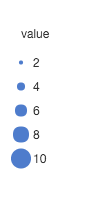
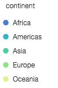
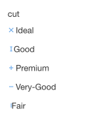
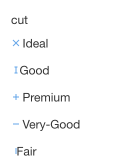

教程
图形属性简介
图形的属性作为 G2 语法元素非常重要和灵活的一部分，是将数据的字段映射成位置、颜色、大小、形状等图形属性，通过本章你需要了解：
- 字段和属性的映射方式
- 属性对图表其他元素的影响
图形属性类型
- position：位置；
- color：颜色；
- shape：形状；
- size：大小；
- opacity：透明度
图形属性的语法
chart.point().position('x*y').color('z');
chart.interval().position('x*y').color('x');G2 检查属性对应的参数 dim，有以下情形：
- 单个单词的，判断是否是输入数据源的字段名称，如果不是则认为是一个常量，如： 'cut' 是数据的一个字段，'red' 是一个颜色常量；
- 多个单词使用
*连接，属性会对多个字段进行数据的映射，如：cut*price，x*y等； - 统计函数，会对经过统计之后的数据进行映射，如：position(summary.count('cut'))；
- 存在一些特殊的属性名，你需要知道的，例如 '..count', '..percent'，经过统计变换后生成的字段名。
注意：
G2 中有以下保留字：x, y, color, shape, size, opacity，如果在代码中使用会出现以下情形：
- 字段名和属性含义一致时不会出错：
chart.line().position('x*y').color('color');- 字段名和属性名不一致时会出现问题：
// 此时显示会混乱
chart.line().position('color*x').color('y');- 属性内部使用统计函数，生成新的字段时，导致字段名无法对应
chart.interval().position(Stat.summary.percent('x')).color('type');所以 G2 的语法中不要使用带有以上保留字的字段名。
图形属性和运算符
目前图形属性支持如下两种运算符 + *，下面对这两种运算符的含义进行解释：
x*y
以 chart.point().position('xy') 为例，point 代表图形，即最后需要生成点图，而 position 代表位置，position('xy') 代表数据在图形中的位置由 x 和 y 这两个维度的变量决定，x * y 的数据处理结果可以理解为：

x+y目前只有 position 图形属性支持
以这个语法 chart.interval().position((a + b + c + d)*d) 为例，(a + b + c + d) 代表了数据的一个区间，从 a 到 b 到 c 到 d。G2 会默认按照声明的字段顺序将参与加法运算的属性进行合并，生成一列属性名为 'a+b+c+d' 的数据，其中的数据值为数组： [a1, b1, c1, d1]，然后将新生成的字段参与图形的绘制和映射。如下，展示的瀑布图，每一个柱子都代表了一个数值区间。
var data = [
{"time":1428163200000,"start":469,"end":480},
{"time":1428163203600,"start":480,"end":430},
{"time":1428163207200,"start":430,"end":410},
{"time":1428163210800,"start":410,"end":420},
{"time":1428163214400,"start":420,"end":440},
{"time":1428163218000,"start":440,"end":460},
{"time":1428163221600,"start":460,"end":410},
{"time":1428163225200,"start":410,"end":440},
{"time":1428163228800,"start":440,"end":490}
];
var frame = new G2.Frame(data); // 创建数据源
frame.addCol('trend', function(obj) {
return (obj.start <= obj.end) ? 0 : 1;
});
var chart = new G2.Chart({
id: 'waterfall',
width: 800,
height: 400
});
var defs = {
'time': { // 设置日期类型
type: 'timeCat',
nice: false,
mask: 'HH:MM:ss'
},
'trend': {
type: 'cat',
alias: '趋势',
values: ['上涨','下跌']
}
};
chart.source(frame, defs);
chart.interval()
.position('time*(start+end)')
.color('trend',['#1bbd19','#fa513a'])
.size(25);
chart.render();图形属性映射
通过下面几个例子让我们来了解下 G2 的语法是如何进行数据和图形属性的映射的：
- position 位置的映射
位置属性的映射，用于确定由数据中的哪几个字段来确定在平面坐标系的位置。如下语句使用 cut 表示点的 x 轴的位置，price 表示点的 y 轴的位置，使用 cut 给点添加颜色，区分不同的数据。
chart.point().position('cut*price').color('cut');- shape 形状的映射
这个语句通过 cut 字段来映射形状，即根据数据集中不同的 cut 值来绘制不同形状的图形。
chart.point().position('cut*price').shape('cut');- 结合统计函数
chart.interval().position(Stat.summary.max('cut*price')).color('cut');这个语句首先经过统计函数计算出每个 cut 分类的 price 最大值，然后进行图形属性的映射，即这个时候横轴为 cut，纵轴为 price 的最大值，如下图所示：
$.getJSON('/data.json?filename=diamond',function (data) {
var Stat = G2.Stat;
var chart = new G2.Chart({
id: 'c1',
width: 800,
height: 400,
plotCfg: {
margin: [20, 90, 60, 80]
}
});
chart.source(data);
chart.interval().position(Stat.summary.median('cut*price')).color('cut');
chart.render();
});图形属性同其他语法元素
图形属性和统计
统计函数用于对数据进行一些统计处理，常见的统计函数在前面的章节已经介绍过，图形属性会对统计函数的执行产生影响：
color和shape图形属性进行映射的字段如果是分类度量时,G2 会首先对数据按照这些属性对应的字段进行分组，然后每个分组进行单独的统计。chart.interval().position(Stat.summary.median('cut*price')).color('cut');G2首先根据
cut字段对数据进行分组，然后对于每个分组执行Stat.summary.median的统计取中位数，所以生成了多个柱状图。统计函数的参数会传递到属性中，有时候统计函数会自动产生新的变量，如 '..count','..percent',也会被属性接收。比如在使用统计函数
Stat.summary.percent()来绘制展示百分比的饼图时，就会自动生成..percent字段，当需要进行自定义文本时，我们就需要使用到这个字段。
// 格式化饼图文本
function formatter(text,item){
var point = item.point; // 每个弧度对应的点
var percent = point['..percent']; // ..percent 字段由Stat.summary.percent
percent = (percent * 100).toFixed(2) + '%';
return text + ' ' + percent;
}
var data = [
{type: '类型一',value: 100},
{type: '类型二',value: 200},
{type: '类型三',value: 150},
{type: '类型四',value: 50},
{type: '类型一',value: 40}
];
var Stat = G2.Stat; // 引用 Stat
var chart = new G2.Chart({
id: 'c2',
width: 800,
height: 400,
plotCfg: {
margin: 100
}
});
chart.source(data);
chart.coord('theta');
// 根据 type 字段对数据进行分组，计算每个 type 下 value 占所有数据总和的百分比
chart.intervalStack()
.position(Stat.summary.percent('value'))
.color('type')
.label('type', {
renderer: formatter
});
chart.render();图形属性和图例
使用 G2 绘制出的图表是否会渲染出图例，是由所使用的图形属性所决定的。图例的生成规则如下：
- 如果
color、shape、size3 个图形属性的参数是数据源中的字段属性时会生成图例，对应的图例会在颜色、大小上做区分； - 如果
shape图形属性的参数是数据源中的字段属性时，生成的图例还会在形状上作区分； - 如果属性参数的字段类型是连续数据时，图例按照数字的大小对 color、size进行计算，生成不同的颜色值和大小的连续图例；
- 如果属性参数的字段类型是分类数据时，图例会根据数值的分类生成对应不同的颜色、形状和大小的分类图例。
下面分别展示了四种图例： 连续的 size、分类、连续的 color、不同的 shape:


 

具体可参见图例章节。
示例
下面展示的是不同颜色不同形状的散点图，这里我们都使用 cut 字段进行 shape 和 color 的映射，而点的位置是由 carat 和 price
这两个字段决定的。
$.getJSON('/data.json?filename=diamond',function (data) {
var chart = new G2.Chart({
id: 'c3',
width: 800,
height: 400 });
var shapes = ['cross','tick','plus','hyphen','line']; // 更换图形类型
chart.source(data);
chart.point()
.position('carat*price')
.shape('cut', shapes)
.color('cut')
.size(3);
chart.render();
});更多
在了解了图形属性之后，让我们来详细了解下 G2 所提供的几何对象 Geom 的基本概念和方法。